Bölüm 6

YENİDEN ÜRETİM VE BUNALIMLAR
Kapitalist üretimi görmüş bulunuyoruz. Artık bu üretim sisteminin gün be gün, ay be ay, yıl be yıl kendini nasıl yeniden ürettiğine bakmamız gerekiyor. Bu da bizi dolaşım sorununa geri götürecektir.
Her toplumsal üretim süreci aynı zamanda bir yeniden üretim sürecidir.
Marx, Kapital, s. 547
Kapitalizmin kendini başarıyla yeniden üretebilmesi için neler gerekir? Sermayenin yeniden üretimi için en önemli önkoşullardan biri işçinin, yaşamını sürdürebilmesi için, emek gücü piyasasına bağımlılığının yeniden üretilmesi, yani işçilerin sermayeye bağımlı olması gerekir.
İtiraf etmek gerekir ki, işçimiz, üretim sürecinden, ona girdiği sırada olduğundan farklı bir şekilde çıkar. Piyasada, diğer meta sahiplerinin karşısına, “emek gücü” metasının sahibi olarak çıkmıştı. Meta sahibinin karşısında meta sahibi. Emek gücünü kapitaliste satarken iki taraf arasında yapılan sözleşme, işçinin kendisi üzerinde serbestçe tasarrufta bulunduğunun deyim yerindeyse yazılı kanıtıydı. Alışveriş işlemi tamamlandıktan sonra keşfedilir ki, işçi, “başına buyruk kimse” değildir; emek gücünü satmakta serbest olduğu süre, onu satmak zorunda olduğu süredir.
Marx, Kapital, s. 293
Siyasal sağ refah bağımlılığından söz ederken piyasayı tamamen bir özgürlük ve serbestlik alanı gibi görme eğilimindedir. Ancak Marx, piyasaya bağımlılığı yaratıp sürdürebilmek için bir hayli zorlama gerektiğini bilir. Bu piyasa bağımlılığının ilk başta yaratılması konusunda Marx, İngiltere ve İskoçya’daki sürecin tarihsel özetini verir:
Üreticileri ücretli işçilere dönüştüren tarihsel hareket, bir yandan, bunların serflikten ve lonca zincirlerinden kurtarılmaları olarak görünür ve bizim burjuva tarihçilerimiz için meselenin sadece bu yüzü mevcuttur. Ama öte yandan, bu yeni kurtarılmış insanlar, ancak, bütün üretim araçlarından ve eski feodal düzenin kendilerine sağladığı bütün yaşama güvencelerinden yoksun bırakıldıktan sonra, kendi kendilerinin satıcıları durumuna gelir. Ve onların mülksüzleştirilmesinin öyküsü, insanlık tarihine kandan ve ateşten harflerle yazılmıştır.
Marx, Kapital, s. 688
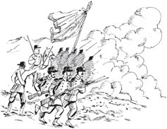
Üç yüz yıldan uzun bir süredir, kırsal kesim işçileri topraktan uzaklaştırılıp şehirlere mülksüz proleterler olarak sürülmektedir. Bu da serseriliğe ve küçük suçlara yönlendirilmiş geniş bir halk kesimi yaratmıştır. Buna karşılık olarak on beşinci yüzyıl sonundan bu yana mülksüzlere gaddarca bir devlet savaşı açılmıştır.
Böylece, mülklerinden zorla sürülüp çıkarılan ve serseriliğe mahkûm edilen kır nüfusu korkunç bir terör aracı olarak yararlanılan yasalar altında kırbaçla dövülmek, kızgın demirle dağlanmak ve her türlü işkence altında inletilmek suretiyle ücretli çalışma sisteminin zorunlu kıldığı disipline alıştırıldı.
Marx, Kapital, s. 707
Sömürge topraklarının istilâ edilmesiyle işçiler, İngiltere’deki ücret sisteminden kurtulmak için her fırsatta kullandıkları bir olanak yakaladılar. Marx, Batı Avustralya’da Swan River’a yerleşen Bay Peel örneğinden söz eder. Bay Peel giderken 50.000 sterlin ile 3000 işçiyle ailesini yanında götürmüştür. Ama işçiler çevrelerindeki bomboş sahipsiz araziyi hemen fark edince, Bay Peel’i daha da zenginleştirmek için çalışmayı gereksiz bulmuştur.
Zavallı Bay Peel, her şeyi öngörmüş, ama İngiltere’deki üretim ilişkilerini Swan River boylarına taşımayı akıl edememişti!… Şu faciaya bakın! Yiğit kapitalist, kalkmış, Avrupa’dan kendi paracıkları ile kendisine kanlı bıçaklı rakip olacak insanlar getirmiş! Bu, dünyanın sonu demek değil de nedir?
Marx, Kapital, s. 733, 736
Bu tarihe öylesine düşülmüş bir dipnot değildir. Kapitalizmin kökeni, kırsal işçilerin üretim araçlarını ellerinden alıp muazzam sayıda insanı piyasaya bağlamakta yatıyorsa, kapitalizmin yeniden üretimi, bu piyasaya bağımlılığı daha büyük ölçekte durmadan yeniden üretmeyi gerektirir.
Sermaye ilişkisi, işçilerle, emeğin gerçekleşme koşullarını oluşturan mülkiyetin, birbirlerinden ayrılmış olmasını gerektirir. Kapitalist üretim, kendi ayakları üzerinde durabilecek hale gelir gelmez, bu ayrılmayı korumakla kalmaz, bunu giderek büyüyen bir ölçekte yeniden üretir.
Marx, Kapital, s. 687
Kapitalizm, boyutu gittikçe büyüyen piyasa bağımlılığını hangi anlamda yaratır? Eski ve uzak geçmişte bu bir kere başarıldı mı öyle kalır elbette, değil mi? Hiç de öyle değil. Aslında kapitalizm, insanların, kendileri ile kapitalist piyasaya tam ve kesin bağımlılık arasına tamponlar koymaya çalışma eğilimiyle sürekli olarak boğuşmak zorundadır. Sermayenin ilk yapması gereken, halkın çoğunluğunun para biriktirip emek güçlerini satmaya mahkûm olmaktan kurtulabilecek kadar iyi ücret almamasını sağlamak olmalıdır. Bu durum 1700’lerin başında, filozof Bernard de Mandeville tarafından fark edilmiştir. Marx ondan şu alıntıyı yapar (Kapital, s. 594-595):
İşçilerin açlıktan ölmemelerine dikkat edilmeli ama ellerine tasarruf edilmeye değer bir şey de geçmemelidir. … Hayatlarını günlük çalışmalarıyla kazanan kimseler … ihtiyaçlarından başka bir dürtüye sahip değildir; bunun için, onların bu ihtiyaçlarını hafifletmek akıllılık, tamamıyla tatmin edip yok etmek ise delilik olur. Çalışan bir kimseyi gayrete getirebilmenin biricik yolu, ona orta karar bir ücret vermektir. Çok düşük bir ücret onu, kendi mizacına göre, bezginleştirir ya da umutsuzluğa düşürür, çok fazla bir ücret ise küstah ve tembel yapar.
Bernard de Mandeville, The Fable of the Bees
Sermaye Mandeville’in öğretilerini iyi kavramıştır. Bugün çoğu ücretli işçi bir iki kez ücret alamasa ciddi ölçüde mali darlığa düşecek durumdadır. İşçilerin her zaman emek güçlerini satmak zorunda kalmaları, onları görünmeyen ama sağlam zincirlerle sermayeye bağlar.
Aslına bakılırsa, işçi kendisini kapitaliste satmadan önce de sermayeye aittir. İşçinin kendi kendini satışının dönemsel olarak yenilenmesi, işçinin kendilerine ücret yoluyla bağlandığı efendilerinin değişmesi ve emeğin piyasa fiyatındaki oynamalar, işçinin ekonomik bağımlılığına hem yol açar hem de bunu görünmez hale sokar. Şu halde, kapitalist üretim süreci, bir bütün olarak ele alındığında ya da bir yeniden üretim süreci olarak, sadece meta, sadece artık değer üretmekle kalmaz, sermaye ilişkisinin bizzat kendisini, bir tarafta kapitalisti, diğer tarafta ücretli işçiyi üretir ve yeniden üretir.
Marx, Kapital, s. 558-559
Bu konuda makroiktisat ve politika üretme düzeyinde emek ile sermaye arasında sürekli bir çatışma yaşanır. Emek çeşitli yollarla bu “kapitalist ilişki”yi zayıflatmaya, sermaye ise pekiştirmeye uğraşır. Sözgelimi devlet işsizlere bazı haklar tanıdığında bu kapitalist ilişki zayıflar. Devlet işçileri temsil eden sendikaların gücünü ve etkinliğini zayıflatırsa o zaman da bu kapitalist ilişki güçlenir.
Uluslararası düzeyde, Uluslararası Para Fonu (eline düşenlerce Uluslararası Ana Belleyiciler diye bilinir4) ve Dünya Bankası gibi kurumlar ünlü Yapısal Uyum Programlarını dayatırlar.
Bu programlar, sıradan insanların aldıkları temel besinlerin piyasalarını ve fiyatlarını koruyan yasaları ortadan kaldırmak, ulusal kaynakları ve şirketleri yabancı sermayeye satmak, kamu harcamalarını kısmak, hatta bir ülkenin üretebileceği (yani yerli halktan çok batı piyasalarını besleyen) tarım ürünlerini belirlemek gibi işlevler görür. Bütün bu politikalar sıradan halk ile piyasa bağımlılığı arasına konan tamponları kaldırıp “kapitalist ilişkiyi” güçlendirmeyi hedeflemektedir.
Piyasa kendi dinamiğine bağımlılığı da dolaysız biçimde arttırır. Sözgelimi şirketler ve vurguncular büyük miktarlarda yiyecek satın alıp saklar, böylece daha pahalı satabilmek için fiyatları yükseltmeye çabalar.
Bankalar ve olası zarara karşı önlem fonları, temel yiyecek maddelerinin gelecekteki fiyatları üzerine kumar oynamak amacıyla bu maddeleri stoklar, gelişmekte olan ülkelerin tarım üreticilerini zarara uğratıp yoksul tüketiciler arasında açlığa yol açar.
Etiyopya dışarıdan buğday alımına büyük ölçüde bağlı olduğundan temel besin fiyatlarındaki artış kitlesel bir etki yaratmıştır. Etiyopya’nın 2006’da 84 milyon dolar olan toplam buğday alım faturası, 2008’de 465 milyon dolara fırlamıştır. … Nuria Muhammed, Etiyopya’nın güneyindeki Oromiya yöresinde sebze yetiştirmektedir. Yerel kuraklık Nuria’yı buğday ve mısır alımı için yerel piyasaya bağımlı kılmış ama buğday ve mısırın fiyatı iki katına çıkmıştır. … Nuria yaşamını sürdüremek için yiyecek alabilmek amacıyla beş ineğini satmak zorunda kalmıştır. “İnekleri 200-300 Br (Birr) karşılığında sattım. Yem sıkıntısı nedeniyle bir deri bir kemik kalmışlardı ama onlar ailemin tek değerli varlıklarıydı. Evvelce tanesi 1000 Br (105 ABD $) ediyordu.”
World Development Movement,
Betting on Hunger, 2010
İşçinin piyasaya bağımlılığını yeniden üretmek için sermayenin yeniden üretimi gerekliyse, eskisinden daha fazla sermayenin yeniden üretilmesi de gereklidir. Kapitalistin tek bir amacı, tek bir Tanrısı vardır.
Biriktiriniz, biriktiriniz! İşte, Musa da bu, peygamberler de bu! … Birikim için birikim, üretim için üretim: Klasik ekonominin burjuva döneminin tarihsel görevini ifade eden formülü işte buydu.
Marx, Kapital, s. 575
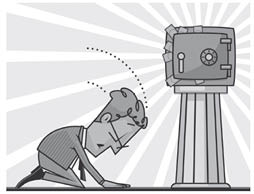
Bazen Hollywood filmlerinde gördüğünüz türden bir mucize gerçekleşseydi ve bir kapitalist, o ana dek işçilerine gerçekten çok kötü davrandığına, ama artık nazik ve cömert olmaya karar verseydi, rekabet mekanizması onu hemen piyasanın dışına atardı.
Serbest rekabetin serbest kıldığı şey bireyler değil, sermayedir. … Rekabet bir sürü kapitalistin, sermayenin içsel belirleyicilerini birbirlerine ve kendilerine dayatma yolundan başka bir şey değildir.
Marx, Grundirisse
Rekabetin en önemli rollerinden biri, her kapitalisti kendi emek maliyetini düşürmeye zorlamaktır. Emeğin her zaman bir maliyeti vardır ama:
bunların sıfır maliyetleri, matematik anlamıyla, kendisine her zaman biraz daha yaklaşılabilen ama yine de hiçbir zaman ulaşılamayan bir limittir. Sermaye, emeğin maliyetini bu sıfır noktasına indirme eğilimini bir an bile terk etmez.
Marx, Kapital, s. 580
Bunun tek nedeni, kapitalistlerin kişisel zenginlikleri için daha fazlasını kapma hırsı değildir. Aynı zamanda biriktirmek için biriktirmek, dolaşım çevrimi için olabildiğince çok artığa el koymayı da gerektirir, böylece artık üretim sürecine yeniden sokulur.
Sermaye dolaşımının ya da P – M – P+ hareketinin, servetin dolaşım dışına çıkıp kişisel tüketim çevrimine düşmesine karşı olduğunu hatırlayın. Sonuçta sermaye için bu bir kayıptır. Tersten bakarsak, sermaye tüketim için üretim yapmaz!
Biriktirme yapılabilmesi için değerin, üretim ve dolaşım çevrimlerinde sermayenin farklı maddi cisimleşmeleri arasında akması gerekir. Daha önce gördüğümüz gibi değer, değişmez (sabit ve dolaşır) sermaye içinde cisimleşir, bu cisimleşmelerin değerleri de, üretim araçlarına ve malzemelere daha sonraki dönüşümlerinde değer katan değişir sermaye (emek gücü) ile temasa geçtiğinde başka bir ürüne aktarılır. Bu son ürün ya da meta-sermaye piyasada dolaşır. Bu satıldığında, meta-sermayede tutulan artık değer serbest kalıp sermayeye geri döner.
Bir miktar paranın üretim araçlarına ve emek gücüne dönüşmesi, sermaye olarak iş görecek bir miktar değerin yapacağı ilk harekettir. Bu dönüşüm piyasada, yani dolaşım alanında olur. Hareketin ikinci aşaması, yani üretim süreci, üretim araçları, değerleri kendilerini meydana getiren unsurların değerini aşan, yani başlangıçta yatırılmış bulunan sermaye ile birlikte bir artık değeri içeren metalara dönüşür dönüşmez tamamlanmış olur. Bu metaların da yeniden dolaşım alanına sokulmaları gerekir. Bu, bu metaların satılmaları, değerlerinin para olarak gerçeklik kazanması, bu paranın yeniden sermayeye dönüşmesi, bu hareketin durmadan yenilenmesi demektir.
Marx, Kapital, s. 545
Bütün olarak kapitalizm ancak, daha fazla sermaye üretme sürecine, yeterli miktarda sermayenin yeniden yatırılmasıyla mutlu olur.
Bu yeniden yatırımın bir bölümü, yeni tur üretim süreci için gerekli emek gücünün satın alınması için “emek fonu” olarak bir kenara ayrılır. Bildiğimiz gibi, her kapitalistin ideali emek maliyetini sıfıra doğru indirmektir. Öte yandan artık değerin bir bölümü, kapitalistlerin tüketim fonuna dönüşecektir. Buradaki şaşırtıcı olmayan ideal, bu fonun birikim çevrimine zarar vermeden olabildiğince büyük olmasıdır. İktisatçı Edward N. Wolf’un ortaya çıkardığı gibi, işçilerle kapitalistler arasındaki en utanç verici eşitsizlik Amerika Birleşik Devletleri’ndedir:
MALİ SERVET
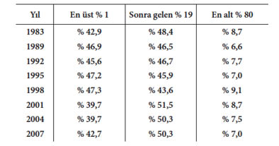
2007’de nüfusun %1’i mevcut mali servetin (oturulan ev dışındaki taşınmazlar, nakit para, değerli kâğıtlar, hisse senetleri, vb.) % 43’ünü ele geçirmişti. Sonra gelen % 19, ABD’de mevcut mali servetin yarısını elinde bulunduruyordu. Demek ki nüfusun % 20’si Amerikan toplumunun kolayca paraya çevrilebilir varlıklarının % 93’ünü emri altında tutuyordu. Bu da nüfusun büyük çoğunluğunun, % 80’inin mevcut mali servetin sadece % 7’siyle idare etmek olması anlamına geliyordu. Öyleyse para, servetin hiç de adil olmayan biçimde dolaşımı için mükemmel bir araçtı.
Kapitalistler sınıfı, işçi sınıfına sürekli olarak, işçi sınıfı tarafından üretilen ve kapitalistler sınıfı tarafından el konulan ürünün bir kısmı üzerinde tasarruf olanağı sağlayan, para biçimindeki senetler verir. İşçiler bu senetleri aynı biçimde sürekli olarak kapitalistler sınıfına geri verir ve bu sınıftan kendi ürettikleri üründen kendi paylarına düşen kısmı alır. Ürünün meta biçimi ve metanın para biçimi, bu işlemi perdeler.
Marx, Kapital, s. 549
Nüfusun çoğunluğunun, kendi ürettiği toplumsal servete, yarattığı toplumsal servet karşılığında kendisine verilen “para biçimindeki senetlerin” doğal sınırlılığı yüzünden, pek eşitsiz bir erişime sahip olduğu çok açıktır. Bu alışverişin sömürücü niteliği, emek gücünün değerinden satılması, üretilen artığa gizlice el konması, emek gücünün piyasada satılmasının görünürdeki serbestliği, toplumsal servete para biçimindeki senet sahipliği aracılığıyla bireysel erişim ile perdelenip saklanır.
Zengin daha da zenginleşirken lüks malların piyasası genişler. Lüks Malları Pazarlama Konseyi’nin iki kurucusu için bunun ne kadar heyecan verici olduğuna bir kulak verelim:
NUCIFURA: Lüks mallar piyasasından söz edelim. Hacmi ne kadar? Ürün türleri hangileri? Yeni ufuklar açan değişiklikler hangileri? Neler olup bitiyor?
FURMAN: Son onyılda belki de bütün iş kesimleri içinde en sağlam pazar oydu. Sıradan perakende kitle piyasasına bakacak olursanız zaman içindeki gayrisafi büyüme hızı yıllık % 4 - % 6 aralığındaydı. Lüks mal kategorisi son onyılda % 20 - % 32 aralığında büyüdü. Sadece ABD’de lüks mal piyasası 40 milyar dolardır. Yetkililer bunun yılda % 15 hızla büyüyeceğini, 2010’da bir trilyon dolara ulaşacağını tahmin ediyor.
Bununla beraber “sıradan perakende kitle piyasası”, lüks mallar piyasasının göbekten bağlı olduğu kârlar üretilebilsin diye halk çoğunluğunun kendilerini yeniden üretmek için gittiği yerdir. Ama ortada bir sorun var.
Kapitalistlerin bütün derdi, işçinin bireysel tüketimini olmazsa olmaz bir düzeye indirmektir.
Her tekil kapitalistin bakış açısından bu elbette tam anlamıyla mantıklıdır. Ama her kapitalist böyle davranmaya zorlanırsa, aynı zamanda bir yerlerde bazı kapitalistlerin böyle davranma dürtüleri olmadığı fantezisine de inanması gerekir. Çünkü eğer her işçinin ücreti kuşa çevrilirse, kitlesel piyasa için üretilen malları kim alacaktır?
Her kapitalist … [işçiyle] üretici-tüketici ilişkisi içinde değildir, dolayısıyla onun tüketimini, yani ücretini mübadele edebilme yetisini olabildiğince kısmak ister. Kuşkusuz kapitalist, öbür kapitalistlerin işçilerinin, kendisinin metalarının en büyük müşterisi olmasını arzu eder. Ama her kapitalistin kendi işçileriyle ilişkisi, sermaye-emek ilişkisi biçimindeki temel ilişkidir.
İşçi ücretlerini ve (sağlık, emniyet gibi) giderleri kuşa çevirmek, tam da her kapitalistin yaptığı bir şeydir. Her tekil kapitalistin bakış açısından bu mantıklı ise de, bütün olarak kapitalizm için büyük bir sorundur. Burada kapitalizmin bir başka merkezi çelişkisini görüyoruz. Kişisel düzeyde mantıklı olan şey, herkes aynısını yaparsa toplamda çok akla aykırı bir sonuç verir.
Şimdi Marx’ın bunalımlara ilişkin iki kuramını açıklayabilecek duruma eriştik. Ele alacağımız ilk kuram AŞIRI ÜRETİM kuramı olup kapitalizmdeki yükseliş, düşüş ve ikisi arasındaki bütün aşamalardan geçen sanayi çevrimiyle ilişkilidir. Marx’ın çevrimsel bunalımlar kuramının üç öğesi vardır:
1) Kapitalizm genişleyemezse bunalıma düşer.
2) Genişleme zorunluluğu, yarattığı toplumsal eşitsizliklerle çatışır.
3) Sosyoekonomik sistemin çeşitli parçalarının hepsinin, piyasa rekabeti nedeniyle birbirine kayıtsız kalması, değer akışında kesilmeler yaratır.
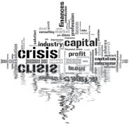
Aşırı üretim, sermayenin egemenliğiyle sınırlanmış kitle tüketiminin ememeyeceği bazı tüketim metalarına gereğinden çok sermayenin bağlandığını gösterir. Eğer meta-sermaye satılamazsa değer akışı durur.
Sermaye, bitmiş ürün biçiminde donup kaldığı müddetçe sermaye olarak hareket edemez, o artık olumsuzlaşmış sermayedir.
Marx, Grundrisse
Değer, maddi şeylerin şeytansı maliki olmak yerine maddi bir kafeste umarsız bir tutsak olur, kaçıp da üretim çevrimine yeniden dönemez.
Üretici güçlerini, onları sınırlayabilecek tek şey toplumun mutlak kapasitesiymiş gibi geliştirecek kapitalist üretim dürtüsü karşısında, gerçek bunalımların nihai nedeni her zaman kitlelerin yoksulluğu ve sınırlanmış tüketimidir.
Marx, Das Kapital, cilt III
Marx’ın bunu ortaya koyuş biçimi çok önemlidir. Bu biçim, Marx’ın kapitalizmin bunalımlarını neden “aşırı üretim” olarak gördüğünü açıklar.
Marx der ki yükselişin doruğunda tam gaz ilerleyen kapitalizmin üretken kapasitesi ile kitlelerin tüketimini, gördüğümüz gibi, zorunlu olarak sınırlayan kapitalizmin toplumsal ilişkileri arasında bir çelişki vardır. Kapitalist toplumun üretme konusundaki mutlak kapasitesi, aslında üretimin tek sınırlayıcısı değildir. Gerçekten de bu kapasite, kapitalizmin eşitsiz toplumsal ilişkileri ile çelişki içindedir. Ama aynı zamanda tüketimin sınırlarıyla da çelişkidedir çünkü kapitalizm için sınırlama, kabul edilemez bir ilkedir.
Bana göre bütün “aşırı üretim” durumunda en can alıcı etmen tesis kapasitesinin kullanılabileceğinden fazla olmasıdır. Bu da daha çok değirmen, daha çok maden, daha çok makine, evet, daha çok tarla demektir. Bu teçhizat hemen her zaman sadece satın alma gücünün üstünde değildir ama satın alma gücü sınırsız olsa bile, dilerseniz sık sık diyelim, tüketim ihtiyaçlarının da üstündedir. Amerikan ayakkabı fabrikaları yılda 900.000.000 çift ayakkabı üretecek biçimde teçhiz edilmiştir. Günümüzde yılda 300.000.000 çift, kişi başına iki buçuk çift ayakkabı satın alıyoruz. … Bana sorarsanız iki çift hem kullanım hem stil ihtiyacımı karşılıyor. Ama (Büyük Amerikan Yaya Yarışı’na5 katılımı arttırma yoluyla) ayakkabı tüketimimizi iki katına çıkarsak bile ayakkabı fabrikalarındaki teçhizatın üçte biri halâ atıl kalacaktır. Hem burada hem Ütopya’da (Yokülke’de) ihtiyacımızın çok üstünde ayakkabı fabrikası bulunmaktadır.
Stuart Chase, Harper Magazine, 1930
Ekonominin bazı kesimlerinde, etkin tüketimin ve hatta tüketim sınırsız kabul edilse bile makul ihtiyaçların ötesine geçen aşırı üretim kapasitelerinin bulunmasının nedeni nedir? Bunu açıklayabilmek için, birikim zorunluluğu ile, piyasa kapitalizminin çıktıları ihtiyaçlara göre düzenlemeye yönelik eşgüdüm mekanizmalarından yoksunluğunu bir araya getirmemiz gerekir. Özel sermaye kâr edebileceği üretim alanına üşüşürken tek tek bunun birimleri toplumsal ihtiyaçlar konusunda ne başka kapitalistlerin ne de işçilerin görüşünü sorar.
Birikim zorunluluğu, işçinin üretim araçlarından koparılması, bunun sonucunda ortaya çıkan toplumsal eşitsizlikler, piyasanın genel başıbozukluğu bir araya gelince, arz ve talebin uyumlu ilişkileriyle erişilebilecek piyasa dengesi umudu havaya uçar.
Bu çelişkiler tek bir genel ya da ana çelişkide toplanabilir: Bir yanda (dev üretim kapasitesiyle) üretim güçleri, öte yanda bu üretim güçlerini düzenleyen (kârın, kullanım değerini ve ihtiyacı koz gibi kullandığı) toplumsal üretim ilişkileri vardır.
Burjuva üretim ve mübadele ilişkileri, burjuva mülkiyet ilişkileri, o dev üretim ve mübadele araçlarını peyda etmiş olan modern burjuva toplumu, büyüler yaparak çağırdığı cehennem kuvvetlerine artık söz geçiremeyen büyücünün durumuna düşmüş bulunuyor. On yıllardır sanayinin ve ticaretin tarihi, modern üretici güçlerin modern üretim ilişkilerine karşı, burjuvazinin ve onun hâkimiyetinin yaşam koşulları olan mülkiyet ilişkilerine karşı isyanının tarihinden başka bir şey değildir. Dönem dönem tekrarlanarak her seferinde bütün burjuva toplumunun varoluşunu daha da korkutucu bir biçimde tehdit eden ticari bunalımları belirtmek yeter. Ticari bunalımlar sırasında yalnızca eldeki ürünlerin büyük bir bölümü değil, daha önce yaratılmış üretici güçlerin büyük bir bölümü de yok olur. Bu bunalımlar sırasında daha önceki bütün dönemlerde olsa olsa bir saçmalık olarak görülebilecek toplumsal bir salgın –aşırı üretim salgını– baş gösterir.
Marx, Komünist Manifesto, s. 47-48
Aşırı üretim zorunlu olarak eksik üretimin de var olduğu anlamına gelir. Bir kesimde çok fazla mal varsa bu bir başkasında eksik mal olduğu anlamına gelir. Kullanılan toplam emek gücü, başıbozuk ve toplumsal bakımdan eşitsiz biriktirme dürtüsü nedeniyle, toplumun çeşitli ve değişen ihtiyaçlarıyla eşzamanlı değildir.
Kapitalizmde mübadele değerinin kullanım değerinden daha önemli olduğunu görmüştük. Mübadele değerinin, metaların belirli ihtiyaçları karşılamalarını sağlayan nitel farklılıklarını zerre kadar hesaba katmadığını da gördük. Dönüşüm değerinin dikkate aldığı tek şey, değerin özü olan tektür ve özdeş şeydeki, toplumsal bakımdan gerekli emek-zamandaki nicel farklardır. Hangi karmaşık nedenlerle olursa olsun eğer toplumsal olarak gerekli emek-zaman, insan ihtiyaçları demetini karşılamak üzere belli bir üretim alanına yatırım yapmak üzere sermayeyi çekmeye yetecek derecede cazip değilse, o zaman o alanda eksik üretim yapılacaktır. Bu durumda, sermaye ve üretken kapasite, kullanım değeri ve ihtiyaç üzerindeki etkisinden bağımsız şekilde, nicel olarak daha fazla değer fırsatı tanıyan başka bir alana kayar.
Ancak bir yanda toplumsal bir nesneye harcanmış toplumsal emeğin toplam miktarı, yani toplumun toplam emek gücünün bu nesneyi üretmek için harcanan parçası, dolayısıyla bu nesnenin üretiminin toplam üretim içindeki payı ile, öbür yanda bu nesne tarafından karşılanan ihtiyacın, toplumun gidermek istediği toplam ihtiyacı içindeki payı arasında zorunlu bir ilişki olması gerekmez, basit rastlantısal bir ilişki yeterlidir.
Marx, Kapital, cilt III
Ama Marx, kapitalizmin bunalımlarına eksik üretim bunalımı değil aşırı üretim bunalımı der, çünkü kapitalizm, herkesin tüm insani ihtiyaçlarının karşılanmasını sağlayacak üretim kapasitesinden yoksun değildir. Sadece, herkesin tüm insani ihtiyaçlarının karşılanması, onun öncelikleri arasında bulunmaz.
Siyasal sağ bazen çeşitli sorunların aslında üretken kapasite sorunu olduğunu ileri sürer. Sözgelimi genetiği değiştirilmiş besinlerin dünyadaki açlığa yanıt olduğu sıkça ileri sürülür. Bu yalandır. Dünyada her gün, evet, her gün, 25.000 kişi açlıktan ölmektedir. Ölmelerinin nedeni dünyada insanları beslemeye yeterli yiyecek olmaması değildir. Üretken kapasite ortadadır ve eğer gelişmekte olan ülkelerde tarımla uğraşanlara kaynak ayrılsa kendine yeterlilik de sağlanır. Bir üretim tarzı küresel kaynakları kapitalizmin yaptığı gibi egemenliği altına alıyorsa bu boyutta günlük can kıyımının faturası elbette ona kesilir.
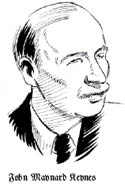
Kapitalist bunalımlar üzerinde eksik üretim terimleriyle de düşünülebilir, sol kanattan bazı analistlere bu yol çekici gelmiştir. Aslında kitlelerin tüketimini sınırlamanın, kapitalist bunalımların merkezinde olduğunu söyleyen de Marx’tır. Ama Marx, kapitalizmin bunalım eğilimine, eksik üretim sorunudur demenin sonuçları konusunda temkinliydi.
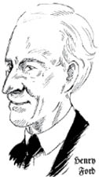
Bunalımların efektif talep ya da efektif tüketim eksikliğinden ileri geldiğini söylemek, su katılmadık bir totolojidir. Kapitalist sistem, … ödeme yapabilenlerinkinden başka tüketim tarzı bilmez. … Ama işçi sınıfının, kendi ürününün çok sınırlı bir bölümünü elde ettiği ve bu üründen aldığı pay artar artmaz, bunun sonucu olarak ücretleri yükselir yükselmez, bu kötü durumun düzeleceğini söyleme yoluyla, bu totolojiye daha derin bir temele sahip olduğu görüntüsünü kazandırma çabası gösterilirse, tek vurgulanması gereken şey, bunalımların, her seferinde, tam da ücretlerin genel olarak yükseldiği ve işçi sınıfının yıllık ürünün tüketime yönelik bölümünden gerçekten de daha büyük bir pay aldığı bir dönem tarafından hazırlandığı olacaktır.
Marx, Kapital, cilt II, s. 392-393
Tarihsel kayıtlar Marx’ın sözlerini doğrulamaktadır. Sözgelimi İkinci Dünya Savaşı’ndan sonra gelişmiş kapitalist ülkeler sermaye ile emek arasında bir tür ateşkes imzaladılar. İyi ücretler karşılığında yüksek üretkenlik oranlarına ulaşıldı (araba yapımında kitlesel üretim teknikleri uygulayan Henri Ford’dan dolayı bu sisteme bazen Fordizm de denir). Buna bir de kamu malları sağlamak ve piyasaları düzene sokmak gibi değişen derecelerde devlet katılımı da eklendi (kapitalist sistemi istikrara kavuşturmak için devlet müdahalesi gerektiğini söyleyen iktisatçı John Maynard Keynes’ten dolayı buna bazen Keynesgil iktisat yönetimi de denir).
Ancak savaşın ardından uzun yıllar süren genişleme 1960’ların sonlarına gelindiğinde durmaya yüz tutunca kapitalizm bunalıma girdi. O iyi günlerde toplumsal üründen işçilerin aldıkları pay artık ödenemez hale gelmişti.
Emek fonu işçiye sürekli olarak emeğinin karşılığı olan bir para biçiminde dönüyorsa, bu, onun kendi ürününün sermaye biçiminde sürekli olarak kendisinden uzaklaşması yüzünden böyle olmaktadır.
Marx, Kapital, s. 549
1980’lerle 1990’larda sermayenin gücü artıp da işçilerin sermayeyle kavga etme gücü zayıfladıkça çok sayıda ürün sermaye olarak işçiden uzaklaşmaya, çok sayıda insanın tüketimleri sınırlanmaya başlandı. Sermaye ile emek arasındaki bu yeni düzenlemeye, sermayenin toplumsal sorumluluklardan sıyrıldığı on dokuzuncu yüzyıl serbestliğin bu yeni türüne neoliberalizm dendi. Ama kuşkusuz bu bizi yine başa döndürüp satışla gerçekleştirilmesi gereken değerlerin birikip oluşturduğu toplumsal ürün ile etkin tüketim arasındaki uçurumun nasıl kapatılacağı sorununa götürdü.
Bu soruna çözüm, toplam emek fonu ile biriken ürünler kitlesi arasındaki uçurumu BORÇ ile kapatarak getirildi. Kapitalist gösteriyi yolundan alıkoymama konusunda bu, özellikle küresel kapitalist sistemin hızlandırıcı gücü olan Kuzey Amerika’da çok önemli bir araç oldu.
Aşağıdaki göz yaşartıcı çizelgeye bakınca, yoksullaşmış tüketicilerin toplam zenginlikten, tekil patronları tarafından yoksun bırakıldıkları ama sistemin bir bütün olarak gerek duyduğu payı almada borçlandırmanın oynadığı rolü görürsünüz:
HARCANABİLİR GELİRİN YÜZDESİ OLARAK TÜKETİCİLERİN ÖDENMEMİŞ BORÇLARI
(milyar dolar)
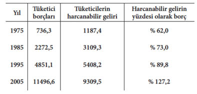
Kaynak: Board of Governors of the Federal System, Flow of Funds Accounts of the United States, Dördüncü Çeyrek, 2005.
İlginç olanı, ABD’nin merkez bankası olan Federal Reserve (Fed)’in bu tür verilere bakmaması ve ekonominin hızla bir felâkete sürüklendiğini hemen açıklamamasıdır. Bunun yerine Fed, siyasetçiler ve piyasa, kitlesel bir “her şey mükemmel, bu sonsuza dek sürecek” toplumsal fantezisinden başka bir şey olmayan bu gidişi benimseyip sürdürmüştür. 2005’teki gerçek ise borcun harcanabilir geliri aşmış olmasıydı.
Ne yazık ki kapitalizmin çelişkilerine çözüm olarak ileri sürülen borçlandırmanın sürdürülemez doğası 2008’de gözler önüne serildi. Adına alt gelirliler ipotek piyasası (yani düşük gelirlilerin evlerini ipotek edip borç alması) denen piyasaya duyulan güvenden eser kalmadı. Borçlar karmaşık yollarla bölünüp paketlenerek piyasaya sürüldüğü için, kimlerin tehlikede olduğu, kimlerin “zehirli borç” taşıdıkları konusunda bankaların hiçbir fikri yoktu. Bankalar arasındaki, dolayısıyla bankalarla şirketler arasındaki borçlanma yolları kuruyup feci sonuçlara yol açtı. Marx bunları on dokuzuncu yüzyılın ikinci yarısında yazmıştı ama bugün sağ olsaydı, yazdıklarını 2008’de çıkan kapitalist bunalıma uygularken pek az değişiklik yapardı.
Üretim sürecinin bütün iç bağlantılarının krediye dayandığı bir üretim sisteminde, ödeme araçlarının çılgın bir tırmanışında eğer kredi birden ortadan kalkar da yalnız nakit kabul edilirse bir bunalımın çıkması kaçınılmazdır. Dolayısıyla ilk bakışta bütün bunalım basit bir kredi ve para bunalımıymış gibi görünür. Aslında bütün olup biten mübadele senetlerinin paraya dönüşütürülebilmesidir. Bu senetlerin büyük bir bölümü fiilen yapılmış alışverişleri yansıtır, bütün bunalımın en temelinde bunların gereğinin çok üstünde çoğalması yatar. Ama buna ek olarak, söz konusu senetlerin çok büyük bir bölümü, açığa çıkan ve patlayan tümüyle hileli işlemleri; borçlanılmış sermayeyle gerçekleştirilen başarısız spekülasyonları, ve son olarak, değer yitiren ya da satılabilir olmayan meta-sermayeleri ya da hiçbir zaman elde edilemeyecek olan hasılatları temsil eder.
Marx, Kapital, cilt III
Gerekli mallar için yetersiz talep (eksik tüketim) ve (uygun fiyatlı evler gibi) ihtiyaç duyulan malların eksik üretimi, başka alanlardaki aşırı üretimin zorunlu yan etkileridir. Aşırı üretim sözgelimi otomobil sanayiinde, besin sanayiinin büyük bölümünde yaygın bir hastalıktır. Ayrıca ABD’nin askeri sanayiinin bunalım sırasında 700 milyar dolar düzeyinde olan yıllık bütçesine de bir bakın. İşte aşırı üretimi, eksik üretimi, eksik tüketimi yaratan bu dengesizlikler ağı, ilk bakışta kredi ve para bunalımıymış gibi görünen bunalımın gerisindeki asıl nedenlerdir. Ama “aşırı üretim” terimi en doğrusudur, çünkü sorunun kaynağı olarak, kapitalizmin toplumsal ilişkilerinin, onun üretken kapasitesini en iyi şekilde kullanma yeteneğinden yoksun olmasını gösterir.
Her bunalımın sonuçlarından biri, Marx’ın sermayenin MERKEZİLEŞMESİ dediği süreci hızlandırmasıdır. Bu süreçte sermayenin bir parçası, başka bir sermaye parçasını alır, ele geçirir, yutar. Bunalımlar kapitalistler arasında da kazananlar ve kaybedenler yaratma eğilimindedir. Kazananlar kaybedenlerin sermayesini kapar.
Merkezileşme süreci zaman içinde, sermayenin YOĞUNLAŞMASI ile ilişkiye girer. Giderek daha fazla sermaye biriktirilirken bir bütün olarak sermayenin kitlesinin büyümesine yoğunlaşma denir. Öte yandan, merkezileşme, bu sermaye kitlesinin kapitalist örgütler arasındaki dağılımıyla ilgilidir.
Kapitalizmin tarihsel eğilimi, gittikçe daha çok sermaye biriktirmesi ve bunu devasa kaynaklara hükmeden her zamankinden daha büyük sermaye birimlerinin elinde toplamasıdır. Sözgelimi bugün bir sürü uluslarüstü şirket, çoğu ülkenin gayrisafi yurtiçi hasılasından daha fazla kaynak kullanır.
Gittikçe büyüyen sermaye havuzları arasındaki rekabet, başka bir çelişkiye de katkıda bulunur:
Rekabet savaşı, metaları ucuzlatarak yürütülür. Metalarda ucuzluk sağlanması, … emeğin üretkenliğine ama bu da üretimin ölçeğine bağlıdır. Bu nedenle büyük sermayeler, küçüklerin hakkından gelir.
Marx, Kapital, s. 605
Sermayenin rekabetçi birikime kilitlenmiş durmaksızın büyüyen birimlerde merkezileşip yoğunlaşmasıyla artık Marx’ın ikinci bunalım kuramı kavşağına gelmiş bulunmaktayız. Marx bu kurama Kâr Oranının Düşme Eğilimi adını vermiştir. Marx bu kuramı ayrıntılı olarak Kapital’in III. cildinde geliştirmiştir.
Kâr oranının azalma eğilimi, çevrimsel bunalımlara düşme eğilimini açıklayan aşırı üretim kuramından farklıdır. İkinci kuram, sanayi çevrimini daha sık, daha tahripkâr kılan, kâr oranı üzerinde öldürücü tehlikesi olan, uzun dönemli bir aşağı doğru baskı olduğunu ileri sürer. Aslında Marx’a göre, kapitalizm yaşlandıkça daha çok hastalanmaktadır.
Marx’ın kâr oranının düşme eğilimi kuramı iki parçalıdır. İlki, üretkenliği yükseltip metaları ucuzlatabilmek için teknolojik değişimi yürüten kapitalistler arasındaki rekabettir. İkincisi, bu sürecin sonuçlarıdır, burada tek tek kapitalistlerin kısa dönemli kazanımları kâr oranına aşağı doğru baskı yapar.
Neden? Üretim sürecine yeni teknolojiler girdikçe, verimliliğin arttığını görmüştük. Bunun sonucunda bir metanın üretimi için gerekli olan emek-zaman kısalır; hem bu teknolojiyi hayata geçiren kapitalist için hem öbür kapitalistler için kısalır, çünkü daha ucuz mallar insanın emek gücünü yeniden üretecek değeri düşürür.
Ayrıca bunun işçinin pek yararına olmadığını da gördük çünkü gerekli emek-zaman kısaldıkça artık emek-zaman, dolayısıyla artık değer üretimi artacaktır. Bir başka deyişle sömürü artar.
Ancak Marx’ın kâr oranının düşme eğilimi kuramı, bu durumun bir başka yanını daha açığa çıkarır. Artık değer ya da sömürü artarken satın alınan değişmez sermayenin (özellikle de yeni makinelerin) değerine ORANLA istihdam edilen işçi sayısı azalır. Bildiğimiz gibi canlı emek gücü, yeni değer üretiminin tek kaynağıdır, bu da eğer göreli sayılar rekabet savaşını kazanmak için düşerse, sermaye değer üretiminin kaynağını azaltıyor demektir. Soru şudur: Artık değer kazanım oranı ya da kalan işçilerin sömürülme oranı bunu telâfi etmeye yetecek kadar artar mı?
Bu akıl yürütmeye kuramın ilk başından (kapitalistler arası rekabetin üretimi nasıl arttığından) başlayıp adım adım ilerleyelim. İnsanın emek gücünün üretkenliğinde yükselmenin, büyük ölçüde bilim ile sanayinin birleştirilmesine ve üretimdeki makinelerin dönüştürülmesine dayandığını daha önce görmüştük.
İşçinin iş gününün karşılığını almadan kapitaliste bıraktığı kısmının büyümesi için, emeğin üretkenliğini artıran diğer her araç gibi, makinelerin metaları ucuzlatması ve iş gününün işçinin kendisi için harcadığı kısmını kısaltması gerekir. Makine, artık değer üretiminin aracıdır.
Marx, Kapital, s. 357
Öyleyse kapitalistin çifte amacı vardır: Artık değer zamanının gerekli emek-zamana oranını (yani artık değeri) arttırmak, ürettiği metaları ucuzlatıp rekabette öne geçmek. Yeniliği ilk uygulayan kapitalist
kendi üretim maliyetiyle, daha yüksek maliyetlerle üretilen başka metaların piyasa fiyatları arasındaki farkı cebine atar. Bu olanaklıdır çünkü öbür metaları üretmek için toplumsal olarak gerekli ortalama emek-zaman, yeni üretim yönteminin gerektirdiği emek-zamandan daha uzundur. Kendi üretim süreci toplumsal ortalamanın üstündedir.
Marx, Kapital, Cilt III
Kapitalist, şimdi, ürünleri, bunların bireysel değerine ya da fazlasına, ama toplumsal değerinden azına satabilir.
Bu tek metanın değeri şimdi toplumsal değerinin altında olur, yani bu meta aynı nesnenin toplumsal ortalama koşullar altında üretilen büyük bir yığınına göre daha az bir emek-zamana mal olur.
Marx, Kapital, s. 310
Artık kapitalist hem iyi bir kâr elde edebilecek hem de rakiplerini alt edebilecek bir konumdadır.
Ancak en son teknolojiyle üretilen metaların tekil değeri ile artık eskimeye yüz tutmuş teknolojiyle üretilen aynı metaların toplumsal değeri arasındaki fark kapanmak zorundadır.
Teknolojik yeniliklere başvurma dürtüsü rakiplerde de vardır; bir kapitalist bir adım öne geçtiğinde bu dürtü daha da güçlenir. Yeni geliştirilmiş üretim araçları zamanla bütün kesimde uygulamaya girer.
Yeni üretim yöntemi genelleşir genelleşmez ve böylece ucuza üretilen metanın bireysel değeri ile bunun toplumsal değeri arasındaki fark ortadan kalkar kalkmaz, sözü edilen bu ekstra artık değer yok olur. Kendisini yeni üretim yöntemini kullanan kapitaliste metasını toplumsal değerin altında bir değerle satması zorunluluğu biçiminde duyuran aynı yasa, yani değerin emek-zaman ile belirlenmesi yasası, rekabetin zorlayıcı yasası olarak kapitalistimizin rakiplerini yeni yöntemi kendi işyerlerinde uygulamaya sevk eder.
Marx, Kapital, s. 311
Yeni üretim araçları genelleşince, onu ilk uygulayan kapitalist(ler), rakiplerinin kendisini yakalaması yüzünden kâr oranının düştüğünü görebilir. Ama acaba bu kâr oranı sadece yeniliğin ilk kapitalist(ler)ce uygulanmasından önceki düzeye mi düşer?
Marx’a göre hayır. Aşağıya doğru baskı, kâr oranını son turdaki teknolojik değişmeden önceki düzeyinin altına iter. Bunun nedeni, değişmez sermaye ve özellikle de doğrudan doğruya üretim sürecinde kullanılan yeni teknoloji için yapılan sermaye harcamalarının, emek gücü için yapılan sermaye harcamalarına oranla artmasıdır. Ancak bildiğimiz gibi değişmez sermayenin metalara aktardığı sadece kendi değeridir. O değer yaratmaz.
Artık değer, sermayenin sadece değişen kısmından elde edilir ve görmüş olduğumuz gibi, artık değerin kütlesi iki faktörle belirlenir: artık değer oranı ve aynı anda çalıştırılan işçilerin sayısı.
Marx, Kapital, s. 390
Üretim araçlarındaki teknolojik değişmeler iki şey yapmaya eğilimlidir: a) Artık değer oranı artma eğilimindedir. b) Üretim araçlarındaki dönüşümden sonra istihdam edilen işçi sayısı düşme eğilimindedir. Canlı emek gücü, yeni değer üretiminin tek kaynağı olduğundan, sorun yalın biçimiyle şudur: Artık değer oranı (yani sömürü) yeni değişmez sermaye maliyetine oranla işçi sayısındaki azalmayı telafi edebilir mi?
Örnek olarak X metasını alalım. X metasının her biriminin üretiminde, Değişmez Sermaye, Değişir Sermaye ve Artık Değer arasında şu ayrışım vardır.
1. (Değişmez Sermaye = 20) + (Değişir Sermaye = 80) (80 işçiyle temsil edilir) + (Artık Değer = 40). Metada cisimleşmiş toplam değer = 140. Artık değer oranı, Artık Değerin Değişir Sermayeye bölünmesiyle bulunur:
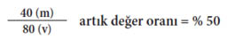
Kâr oranı, birim başına yatırılan Değişmez Sermaye ile Değişir Sermaye toplamı kullanılarak hesaplanır:
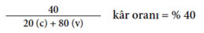
Şimdi diyelim ki başka bir kapitalistin kendi üretim araçlarında yaptığı yenilik sonucunda değişmez ve değişir sermaye arasındaki oran değişiyor, aslında tersine dönüyor. O zaman şunu görürüz:
2. (Değişmez Sermaye = 80) + (Değişir sermaye = 20) (şimdi 20 işçiyle temsil edilir) + (Artık değer = 20). Metada cisimleşmiş toplam değer = 120. Artık değer oranı şudur:
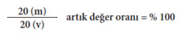
Öyleyse artık değer oranı, yani bu işçilerin (80 yerine 20 işçi) sömürüsü iki katına çıkmıştır bu da yeni teçhizatın daha verimli olduğunu gösterir. Ama kâr oranına ne olduğuna bakalım:
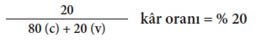
Kâr oranı yarıya inmiştir. Önce % 40’tı, şimdi % 20. Neden?
Çünkü her iki örnekte de Değişmez Sermaye ile Değişir Sermaye toplamı 100 iken, ilk durumda 80 işçiyi temsil eden Değişir Sermaye her meta için 40 Artık Değer üretebilir. İkinci kapitalistin durumunda ise sadece 20 işçiyi temsil eden Değişir Sermaye 20 Artık Değer üretebilir. Artık değer oranı, yani sömürü oranı yükselmiştir, ama Değişir Sermayenin Değişmez Sermayeye oranındaki düşmeyi telâfi edecek boyutta değil.
Ancak bu, başlangıçta bu ikinci kapitalisti pek ilgilendirmez. Başlangıçta 2. kapitalist 1. kapitalistin aleyhine zenginleşir çünkü metalarını 120’ye hatta 125’e satabilir, yine de fiyatı 140’lık meta değerine takılıp kalan birinciden düşüktür. Rafta satılamadan kalmış metanın içinde sıkışmış olan değeri ele geçiremeyen kapitalist için yüksek (% 40) kâr oranının pek yararı yoktur. Ama 1. kapitalist ya yenilenmek ya da iflas etmek zorunda kalınca yeni ortalama kâr oranı, bir tur daha yenilenme olunca daha da düşene kadar, % 20’de kalacaktır.
Bir kez daha kısa dönemli çıkarlar uzun dönemli çıkarlarla, bireysel çıkarlar sınıf çıkarlarıyla çatışmakta, rekabet kâr oranını bir yandan yükseltirken öte yandan düşürmektedir. Ancak şunu önemle vurgulamak gerekir ki Marx, kâr oranı üstünde yalnız aşağıya doğru bir baskı EĞİLİMİ olduğunu, bunun mekanik bir yasa olmadığını söyler, kapitalistler için bir manevra alanı bulunduğunu ileri sürer.
Değişir sermayedeki azalma, emek gücünün sömürülme derecesindeki orantılı bir yükselişle veya çalıştırılan işçilerin sayısındaki azalma, iş günündeki orantılı uzamayla telafi edilebilir. … Ancak, işçi sayısındaki veya değişir sermaye büyüklüğündeki eksilmenin, artık değer oranındaki artışla veya iş gününün uzatılmasıyla telafi edilmesinin, aşılamayacak sınırları vardır.
Marx, Kapital, s. 295-296
Öyleyse kapitalist daha az işçiyi daha sıkı çalıştırıp (iş yoğunluğunu arttırıp) ya da işçilerin ücretlerini değerinin altına indirerek yahut daha uzun işgünü uygulayarak (mutlak artık değeri yükselterek) sömürü oranını yukarı çekebilir. Ama Marx’ın belirttiği gibi, kapitalist için bazı esneklikler varsa da bu olanaklar aşılamaz sınırlarla kuşatılmıştır.
Kapitalist uğraşıp kendi mallarının piyasasını da genişletebilir, sonuçta fiyatları düşmektedir. Bu da kapitalisti daha çok üretime sevk eder. Ama yine bu çözümün de arkasında, aşırı meta üretimi ve değeri satılmayan stokta tutma tehlikesi yatar.
Marx kâr oranının düşme eğilimini denetim altına almanın başka bir yolunun, özellikle Avrupa’nın başlıca güçlerinin sömürgelerinden gelen ucuz hammaddelerin kullanılması olduğunu belirtmiştir. Kapitalizm nasıl tarımda çalışanları bütün üretim araçlarından koparmaya dayandıysa, küresel gücünü de dünyanın her tarafından kitlesel olarak toprak ve kaynak çalarak kendi lehine kullanmıştır.
Amerika’da altın ve gümüş madenlerinin keşfi, yerli halkın kökünün kazınması, köleleştirilmesi ve madenlerin bunların mezarı haline getirilmesi, Doğu Hint Adalarının fethine ve yağmalanmasına başlanması, Afrika’nın, siyah derililerin ticari amaçlarla avlandığı alana çevrilmesi, kapitalist üretim döneminin şafağının işaretleriydi.
Marx, Kapital, s. 718
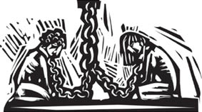
1980’lerden bu yana kapitalizm, ulaştırmanın ve yeni iletişim araçlarının düşen maliyetlerinden yararlanıp imalatının büyük bölümünü gelişmekte olan ülkelerde konumlandırmaya başladı. İmparatorluğun yeni biçimi, doğrudan siyasi kontrol ve askeri güç yerine çoğunlukla iktisadi güç kullanmaya başladı; gerçi gerektiğinde yararlanmak üzere her ikisini de yedekte tutuyordu. Irak bunu epey pahalıya öğrendi.
Sözgelimi Çin, orada yatırım yapan Batılı çokuluslu şirketlere her tür imalat için çok çekici göründü. Bunun sonucunda dünyadaki imalat sanayi mallarının % 20’sini bugün Çin üretmektedir. Başka gelişmekte olan ülkelerle birlikte Çin, gelişmiş kapitalizme zamanda yolculuk şansı tanımaktadır. Eşitsiz gelişme, kapitalizmin orada yirmi birinci yüzyıl işçisinin değil, on dokuzuncu yüzyıl işçisinin değerine sahip emek gücünü kullanabildiği bir tür zaman bükülmesinin varlığı anlamına gelmektedir.
Kapitalizm, en son teknolojinin avantajlarıyla emek ve zaman tasarrufunu, kır ve köy geçmişini pek uzak olmayan bir zamanda arkasında bırakmış emek gücüyle birleştirebilmektedir. Bu emek gücünün emek piyasasındaki değeri, gelişmiş kapitalist bölgelerdeki emek gücünün değerinden bir hayli düşüktür. Ama üretilen malları Çinli emek gücü satın alamadığından, bu mallar (değerlerinin çok üstünde fiyatlarla) satılmak üzere yeniden Batıya taşınmak zorunda kaldığı için, Amerika’nın Çin’e karşı sürdürülemez devasa ticaret açıkları vermesi gibi yeni çelişkiler ortaya çıkmaktadır. Kâr oranını aşağı doğru bastırılmasına karşı bütün olgular kendi sınırlarının yanı sıra kendi çelişkilerini de yaratmaktadır.
Özetlersek, verimlilik artışları, çalışma sürecinde kullanılan canlı emeğin, harekete geçirdiği değişmez sermayede cisimleşmiş değere göre azaldığı anlamına gelmektedir. Bu iyi bir haberdir. Bir ilerlemedir. Ama böylesi bir ilerleme kapitalizm için kötü bir haberdir. Aynı miktarda servet için artık eskisinden daha az canlı emek-zaman kullanmaktadır. Yeni teknolojiyle emek gücünün artması, üretilen her metanın yuttuğu emek değerini azaltıp fiyatları aşağı çekerek kapitaliste, kendi kapitalist yoldaşlarıyla rekabet etmesinde yardımcı olmaktadır. Ama aynı zamanda, üretim sürecine katılan canlı emeğin göreli düşüşü, eskisine göre daha çok sömürülse bile, kâr oranına aşağı doğru bir baskı uygulamaktadır. Kapitalizm iki ters yöne doğru sürüklenmektedir ve bu da sistemin içinde önemli bir kusur sayılmalıdır.
İşte Marx’ın kâr oranının düşme eğilimi kuramı budur. Bir güçlük bunun görgül olarak kendi terimleriyle kanıtlanmasının çok zor olmasıdır. Değişmez sermayenin değişir sermayeye oranı hakkındaki hesaplamaları yapmak için gereken ölçekte veri derlemek ve değerlendirmek güçtür. Marx’ın kendisinin kullandığı açıklayıcı sayıların gerçek ekonomiyle pek bağı yoktur. Bu da kuramın güncel kaymalara ayrıntılı biçimde uygulanmasını zorlaştırmaktadır. Sözgelimi, düşen kâr oranını destekleyebilecek olan karşı etmenlerden biri, diğer metalarla birlikte, (değişmez sermayenin sabit kısmını oluşturan) üretim araçları türünden malların da ucuzluyor olmasıdır.
Değişir sermayeyle karşılaştırıldığında değişmez sermayenin kitlesini arttıran aynı gelişme, daha yüksek emek üretkenliğinin bir sonucu olarak, onun öğelerinin değerini azaltır ve bu nedenle de, değişmez sermaye değerinin, bu değerin sürekli olarak büyümesine karşın, kendi maddi hacmiyle, yani aynı miktardaki emek gücü tarafından harekete geçirilen üretim araçlarının maddi hacmiyle aynı derecede artmasını engeller. Belirli durumlarda, değişmez sermaye öğelerinin toplam değeri aynı kalır ve hatta düşerken, bunların kitlesi artabilir.
Marx, Kapital, Cilt III
Bu da kâr oranı üzerindeki aşağı doğru baskıyı telafi etmede işe yarayabilir çünkü değişmez sermayeye değişire göre daha az sermaye harcaması gitmektedir. Bazıları, bilişim kesimindeki devrim veriyken, bunun özellikle geçerli olduğunu ileri sürmüştür. Ama bunu şu ya da bu yönde kanıtlamak neredeyse olanaksızdır çünkü bunun için gerekli veri yeterli ölçekte bulunamamaktadır.
Bu çok gerçek zorluklara karşın, kuram Marx’ın ileri sürdükleriyle mantıklı olarak uyumludur. Üstelik kâr oranı üzerinde aşağı doğru baskı olduğunu gösteren deliller vardır, eğer durum böyleyse Marx’ın kuramı, bu olgunun gerisindeki karmaşık nedenleri anlamamıza başlamak için belki de en iyi çerçeveyi sunmaktadır.
İkinci Dünya Savaşı (1939-1945) sonrasında başlıca kapitalist ekonomiler için kâr oranı şöyle görünmez:
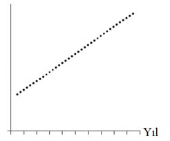
Şöyle de görünmez:
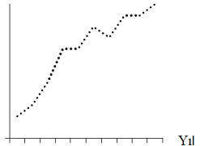
Ama daha çok şuna benzer:
ABD, JAPONYA VE ALMANYA’DA ÖZEL KESİM KÂR ORANLARI, 1950-2001
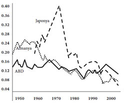
Kaynak: The Economics of Global Turbulance, Robert Brenner
Burada eğilim, bazı çıkışlara karşın uzun vadede kesinlikle aşağı doğrudur. ABD ile Almanya kapitalizminin 1950’lerdeki tepe noktalarına bir daha asla ulaşılmamıştır. Japon kapitalizminin 1960’larda % 40’a erişen astronomik yükselişi artık mazi olmuş, kâr oranı % 8’in altına inmiştir. 1980’lerde kısa ve sürdürülemeyen, ABD için 1990’larda da devam eden bir düzelmenin peşinden, 1997 Güneydoğu Asya bunalımı sonrasında düşüş eğilimi devam etmiştir.
Peki, kâr oranının düşmesi niçin önemlidir? Marx’ın, bu eğilimin mutlak kâr kitlesinin büyüme olasılığını engellemeyeceği konusundaki görüşü açıktır. Ancak sorun, yeniden üretim sürecine yatırılacak sermaye için kâr oranının, Mark’ın deyimiyle “mahmuz” niteliği taşımasıdır.
Gerçekleştirilen kâr oranı, firmaların fabrika, teçhizat ve yazılımdan artık türetme yetisini gösteren dolaysız bir ölçüdür. Ayrıca firmaların yatırımlarından bekledikleri getiri oranının eldeki en iyi tahmin edicisidir. Sonuç olarak kâr oranı, ekonominin parçaları olan firmaların sermaye biriktirerek istihdamı arttırma hızlarının temel belirleyicisidir.
Robert Brenner, The Economics of
Global Turbulance
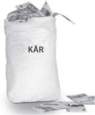
Artığın yeniden yatırılmasında bu mahmuz işe yaramıyorsa, o zaman kapitalistin, bankalarda büyüyen miktarlardaki sermaye üzerinde oturacağını görmek beklenen bir şey olur. Bu durum aslında, yeni tesislere ve işçilere yatırım yapmak için getiri oranının yeterli olmadığı hissine kapıldıklarından devasa nakit dağlarının üstünde oturan sözgelimi büyük ABD şirketleri için geçerlidir. Ancak bankacılık sisteminde dolaşan çok miktarda nakit para, sürdürülemez tüketimi ve 2008 bunalımının gösterdiği gibi mali piyasalardaki vurgunculuk faaliyetlerini körüklemektedir. Çevreye duyarlı sürdürülebilir bir ekonominin geliştirilmesi gibi kendini dayatan ihtiyaçların karşılanmasının gerektiği bir zamanda, bu yatırıma girmemiş artığın büyüklüğü, çok kötü işleyen bir iktisadi sistemin göstergesi olarak algılanabilir.
Bunalımlar halk için kötü haber olsa da bir bütün olarak kapitalist sistem için öyle olmayabilir. Bunalımlar kapitalizmi koruyucu bir rol oynamaktadır.
Bunalımlar, var olan çelişkilerin vahşi, parasal çözümlerinden, bozulmuş dengeyi şimdilik yeniden kuran şiddetli patlamalardan başka bir şey değildir.
Marx, Kapital, Cilt III
Gerçekten de, iktisadi bunalımlar, doğal afetler ve savaşlar, kapitalistlerin büyük ölçeklerde varlık ele geçirmesi için harika fırsatlara dönüşmüştür. Felaketlerden sonraki yağmacı müdahalelere “şok doktrini” denmektedir.
Serbest piyasanın şok gücüyle bağlantısını araştırmaya Irak işgalinin ilk günlerinde başladım. Washington’ın Şaşırt ve Korkut şok tedavisi izleyip başarısız kalan teşebbüslerini Bağdat’tan bildirmemin ardından, 2004 tsunamisinden birkaç ay sonra Sri Lanka’ya gittiğimde aynı manevranın bir başka biçimine tanık oldum: Panik havasından yararlanan yabancı yatırımcılarla uluslararası liderler, binlerce balıkçının su kenarındaki evlerini yeniden kurmalarını engelleyerek alelacele büyük tatil yerleri inşa eden girişimcilere o güzelim sahili devretmek için sıraya girmişlerdi.
Naomi Klein, Şok Doktrini
Marx ayrıca, kapitalizm gibi bunalımlara gebe, patlamaya hazır bir sistemin meşruluğunu nasıl koruduğunu ve sınıflar arasında nasıl destek bulduğunu da açıklamaya çalışmıştı. Marx iktisadi dayatmanın “bu işler böyledir” diye içselleştirilip doğallaştırılma yoluyla karşılıklı olarak güçlendirildiğine de dikkat çekmiştir.
Bir uçta işin maddi koşullarının sermaye olarak belirmesi ve diğer uçta emek güçlerinden başka satacak hiçbir şeyleri olmayan insanların ortaya çıkması yetmez. Bunların kendilerini gönüllü olarak satmaya zorlanmaları da yetmez. Kapitalist üretimin gelişimi içinde, eğitimleri, gelenekleri ve alışkanlıkları dolayısıyla bu üretim tarzının zorunluluklarını apaçık doğa yasalarıymış gibi gören bir işçi sınıfı oluşur. Bu üretim tarzı tam bir gelişme düzeyine ulaşır ulaşmaz, işleyişi ile her türlü direnci kırar; göreli bir nüfus fazlasının sürekli varlığı, emek arz ve talebi yasasını ve dolayısıyla ücreti, sermayenin değerlenme ihtiyaçlarına uygun sınırlar içinde tutar ve iktisadi ilişkilerin sessiz baskısı kapitalistin işçi üzerindeki kesin egemenliğini tamamlar. Gerçi, iktisat dışı, dolaysız zora yine başvurulur, ama yalnızca istisnai olarak. İşlerin normal akışı sırasında işçi, “üretimin doğal yasaları”na, yani kapitalist üretimin kendi mekanizması ile yaratılan, güvence altına alınan ve ebedileştirilen sermaye bağımlılığına terk edilebilir.
Marx, Kapital, s. 707
Marx’ın burada anlatmaya çalıştığı, iktisadi ilişkilerin kör mecburiyetinin nasıl olup da günlük yaşamda cisimleşmiş kültürel güce dönüştüğüdür. Eğitim (resmi eğitim değil, yaşam boyunca her gün aldığımız “dersler”), gelenek, alışkanlık, insanlara kapitalist sistemi kabullenmeyi öğretir, onları bu yönde biçimlendirir. Marx’ın Kapital’de özetlediği ünlü kuram, bireyin kendini güçsüz kılan sistemle varlığını özdeşleştirmesinden elde ettiği ruhsal doyumlarını anlamamıza yardım eder. Üstelik Marx, (sistemin bunalım eğilimleri veriyken çok önem kazanan) gönülleri ve akılları kazanma savaşının, devleti, kültürü, medyayı, dini de içeren geniş bir kurumlar yelpazesinde nasıl yürütüldüğünü de açıklamaktadır. Bu da bir sonraki bölümün konusu olacaktır.